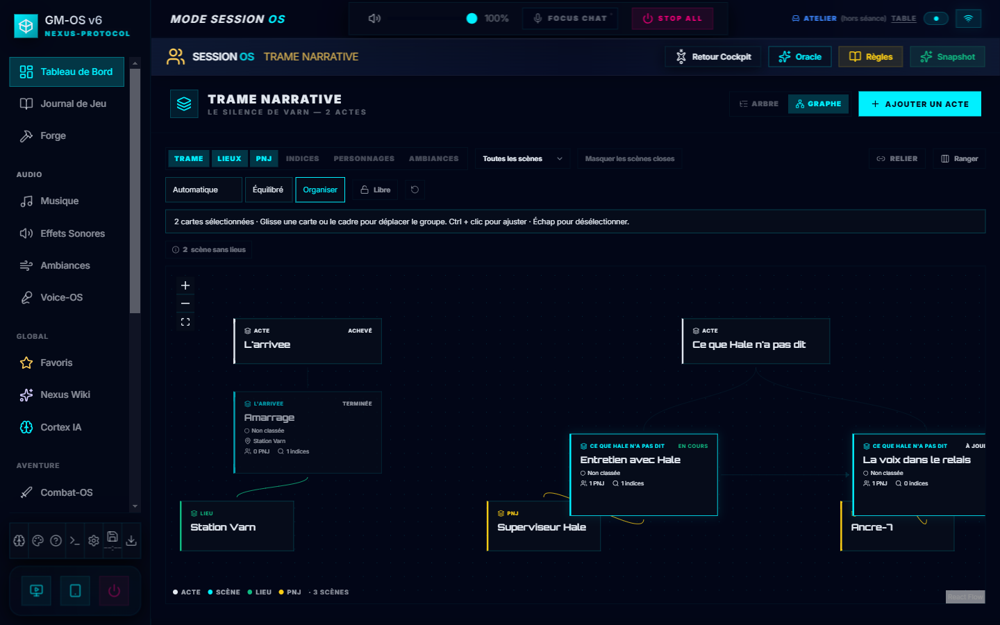
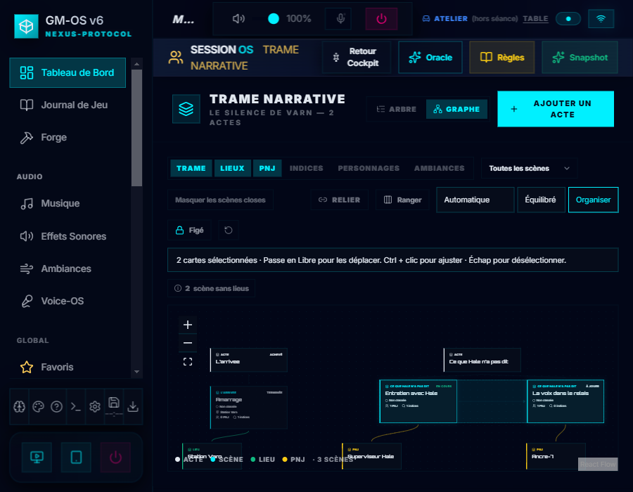

Déplacer plusieurs cartes en un geste
Dans Trame → Graphe, Ctrl + clic ajoute ou retire une carte. Maj + glisser depuis le vide trace un rectangle de sélection. En mode Libre, glisse une carte choisie ou le cadre : le groupe garde ses écarts, les liens suivent et toutes les positions s'enregistrent au lâcher.
Les flèches déplacent aussi le groupe quand une carte a le focus. Échap ou un clic dans le vide libère la sélection. Figé garde la sélection et bloque le déplacement ; Relier la vide.
Captures du 07/10/2026 sur une campagne fictive et un profil isolé. Réalisation · Contrôles · Galerie des cartes

1440 pixels — groupe déplacé, positions enregistrées ensemble.

900 pixels — sélection conservée en mode Figé, bandeau indiquant le mode Libre requis.